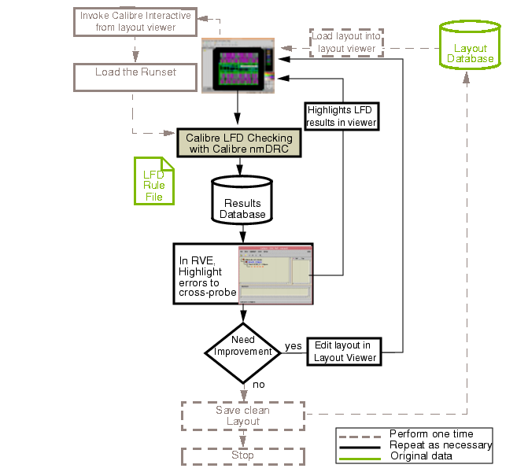

The basic flow
for using Calibre Interactive with Calibre LFD includes connecting
to a supported design tool and viewing results using Calibre RVE.
Figure 1. Using Calibre Interactive with Calibre LFD
You can simplify using Calibre Interactive
to run Calibre LFD by creating a runset with your Calibre Interactive
settings. See “Creating and Using a Calibre Interactive Runset for Calibre LFD”.